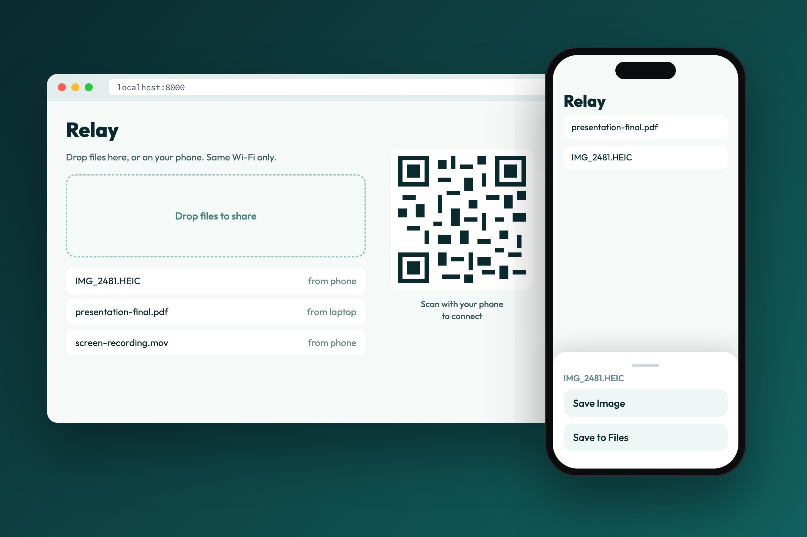
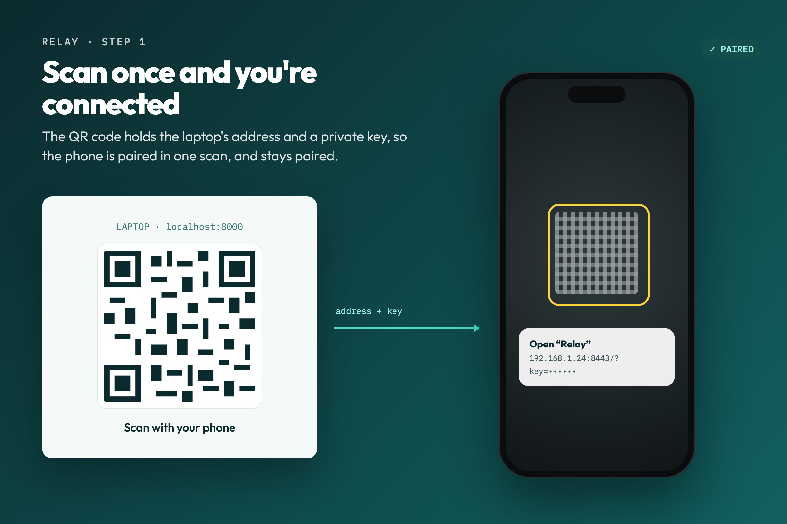
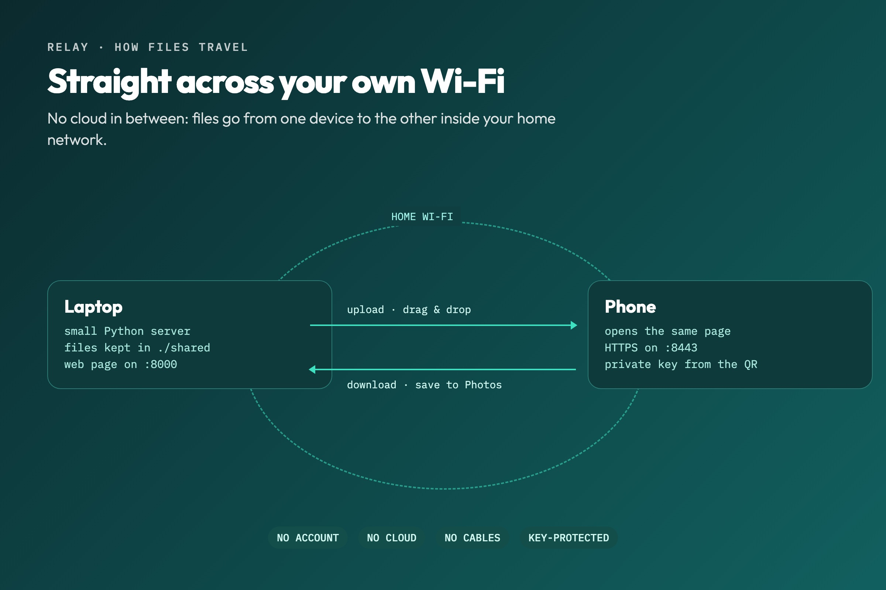
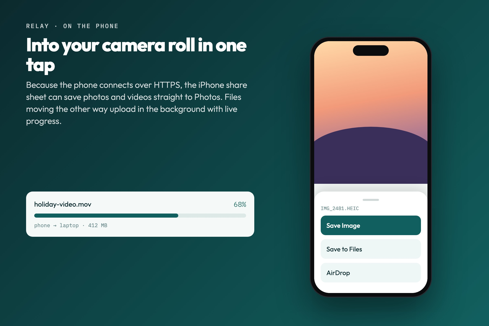

Personal tool
Relay
Relay moves files between a laptop and a phone over home Wi-Fi: no cables, no cloud, no accounts. Open it, scan a code, and drop files on either side.




Scan once and you’re connected
The laptop runs a small Python server and shows a page with a QR code. The code holds the laptop’s address and a private access key, so scanning it opens the same page on the phone, already signed in. The key is kept, so the phone stays paired next time.
Drop files on either side
Drag files onto the page on the laptop, or pick them on the phone. They upload straight into a shared folder on the laptop, the list updates on both devices, and anything can be downloaded or deleted from either one.
Nothing leaves the house
Files travel directly between the two devices inside your own network. There is no cloud service in between, no account to make and no upload limit, and nothing works without the access key.
Straight into Photos
The phone connects over HTTPS, which lets the iPhone share sheet save photos and videos directly to the camera roll instead of only to Files.